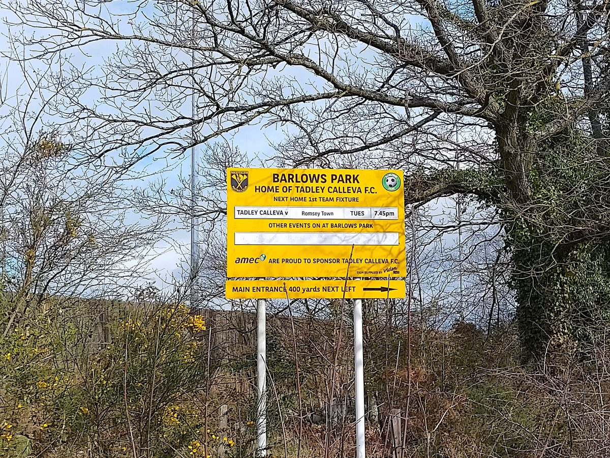

영국 햄프셔 태들리 자원봉사 운동장 '발로스 파크', 24.64kWp 지붕 태양광으로 문 닫을 위기 넘겨…해마다 4,200파운드 넘게 절감 예상

연간 에너지 비용 1만2,000파운드 넘자 자치구 의회 지역기반시설기금 보조로 패널 50장 넘게 설치…20년 8만8,000파운드 절감 전망, 잉글랜드농촌보존운동(CPRE) '최우수 지붕 태양광' 상
영국 햄프셔주 태들리(Tadley)에서 자원봉사자들이 꾸려 가는 운동장 발로스 파크(Barlows Park)가 지붕에 태양광을 달아 치솟는 전기요금 탓에 문을 닫을 수 있었던 위기를 넘겼다. 이 시설은 한 해 에너지 비용이 1만2,000파운드를 넘어서면서 앞날이 불투명해졌으나, 베이싱스토크앤딘 자치구 의회(Basingstoke and Deane Borough Council)의 지역기반시설기금(Community Infrastructure Fund) 보조금으로 24.64kWp 규모의 지붕 태양광을 설치했다. 환경단체 잉글랜드농촌보존운동(CPRE)은 패널 50장 넘게 단 이 설비가 해마다 4,200파운드 넘게 아끼고 탄소 4.5톤을 상쇄하며, 20년 동안 8만8,000파운드를 절감할 것으로 내다봤다. 사업 관계자들은 빠듯한 예산으로 꾸리는 시설인 만큼 아낀 돈을 전기요금 대신 지역 스포츠와 공동체 활동에 다시 쓸 수 있게 됐다고 밝혔다. 발로스 파크와 설치 업체는 CPRE의 최근 전국 농촌 시상식에서 '최우수 지붕 태양광' 부문 상을 받았고, 로저 모틀록(Roger Mortlock) CPRE 최고경영자는 수상자들이 지역 행동의 힘을 보여 준다고 말했다. 보조금 액수와 설치 시기는 알려지지 않았다.
시민에너지 관점
1만2,000파운드 넘는 전기요금이 자원봉사 운동장의 문을 닫게 할 뻔했다는 것은, 에너지 위기가 가장 먼저 동네 공동체 시설을 흔든다는 점을 보여 준다. 보조금 한 번으로 버틸 수 있겠느냐는 의문이 있지만, 해마다 4,200파운드씩 20년 쌓이는 절감액은 시설이 스스로 서는 힘이 된다. 영국은 2010년 발전차액지원 제도를 도입한 뒤 마을 단위 공동체 에너지 단체가 크게 늘었다가 2019년 이 제도가 새 신청을 받지 않으면서 성장이 꺾였는데, 공동체 시설 태양광은 한 번의 보조금보다 오래 가는 제도가 받쳐 줄 때 퍼진다는 교훈이다. 국내에서도 마을회관·경로당·생활체육 시설 지붕을 주민 조직이 소유하고 절감액을 공동체 활동에 돌리는 구조를 꾸준한 제도로 뒷받침해야 한다.
출처: Newbury Today 2026-11-03 Lauren Abbott 원문 보기
英ハンプシャー州タドリーのボランティア運営グラウンド「バーロウズ・パーク」、24.64kWpの屋根置き太陽光で閉鎖の危機を回避…年4,200ポンド超の節約見込み
年間エネルギー費が1万2,000ポンドを超え、区議会の地域インフラ基金の補助でパネル50枚超を設置…20年で8万8,000ポンドの節約見通し、イングランド田園保護運動（CPRE）の「最優秀屋根置き太陽光」賞
英ハンプシャー州タドリー（Tadley）でボランティアが運営するグラウンド、バーロウズ・パーク（Barlows Park）が、屋根に太陽光パネルを設置し、高騰する電気料金のために閉鎖しかねなかった危機を乗り越えた。この施設は年間のエネルギー費が1万2,000ポンドを超えて先行きが不透明になっていたが、ベイジングストーク・アンド・ディーン区議会（Basingstoke and Deane Borough Council）の地域インフラ基金（Community Infrastructure Fund）の補助金で24.64kWpの屋根置き太陽光を設置した。環境団体イングランド田園保護運動（CPRE）は、50枚を超えるパネルを備えたこの設備が年4,200ポンド以上を節約し、4.5トンの炭素を相殺するとともに、20年間で8万8,000ポンドを節約すると見込んでいる。事業関係者は、限られた予算で運営する施設だけに、節約した資金を電気料金ではなく地域のスポーツや共同体活動に再び回せるようになったと説明した。バーロウズ・パークと設置業者はCPREの最近の全国田園表彰式で「最優秀屋根置き太陽光」部門の賞を受け、ロジャー・モートロック（Roger Mortlock）CPRE最高経営責任者は、受賞者たちは地域の行動の力を示していると述べた。補助金の額と設置時期は明らかになっていない。
市民エネルギーの視点
1万2,000ポンドを超える電気料金がボランティアのグラウンドを閉鎖に追い込みかけたことは、エネルギー危機が真っ先に地域の共同体施設を揺さぶることを示している。一度の補助金で持ちこたえられるのかという疑問もあるが、年4,200ポンドずつ20年積み上がる節約額は、施設が自立する力になる。英国では2010年に固定価格買取制度が導入されて地域単位の共同体エネルギー団体が大きく増えたが、2019年に新規申請の受け付けが終わると成長が鈍った。共同体施設の太陽光は、一度きりの補助金よりも長く続く制度に支えられてこそ広がるという教訓だ。韓国でも集会所や敬老堂、生活体育施設の屋根を住民組織が所有し、節約分を共同体活動に回す仕組みを、継続的な制度で支えるべきだ。
出典: ニューベリー・トゥデイ 2026-11-03 ローレン・アボット 原文を読む
英国汉普郡塔德利志愿者运营的运动场"巴洛斯公园"靠24.64kWp屋顶光伏渡过关闭危机…预计每年节省4,200英镑以上
年度能源费用超过1.2万英镑后，借助区议会社区基础设施基金补助安装50多块光伏板…预计20年节省8.8万英镑，获英格兰乡村保护运动（CPRE）"最佳屋顶光伏"奖
英国汉普郡塔德利（Tadley）一处由志愿者运营的运动场巴洛斯公园（Barlows Park）在屋顶安装太阳能板，渡过了因电费飙升而可能关闭的危机。该设施每年的能源费用超过1.2万英镑，前景一度不明，后来借助贝辛斯托克和迪恩区议会（Basingstoke and Deane Borough Council）社区基础设施基金（Community Infrastructure Fund）的补助，安装了24.64kWp的屋顶光伏。环保团体英格兰乡村保护运动（CPRE）预计，这套装有50多块光伏板的设备每年可节省4,200英镑以上、抵消4.5吨碳排放，20年间可节省8.8万英镑。项目相关人士表示，这是一个靠紧张预算运营的设施，省下的钱如今可以不再交电费，而是重新投入当地体育和社区活动。巴洛斯公园和安装企业在CPRE最近的全国乡村颁奖典礼上获得"最佳屋顶光伏"奖项，CPRE首席执行官罗杰·莫特洛克（Roger Mortlock）表示，获奖者都展现了地方行动的力量。补助金额和安装时间未公开。
市民能源视角
超过1.2万英镑的电费险些让志愿者运营的运动场关门，这说明能源危机最先冲击的是社区公共设施。有人怀疑一次性补助能否撑得下去，但每年4,200英镑、累积20年的节省额，会成为设施自立的力量。英国2010年推出上网电价补贴制度后，以村镇为单位的社区能源团体大量涌现，而2019年该制度停止受理新申请后，增长随之放缓。这一教训表明，社区设施光伏要靠长期稳定的制度而不是一次性补助才能推广。韩国也应以持续的制度支持由居民组织拥有村会馆、敬老堂和生活体育设施的屋顶，并把节省下来的钱用于社区活动。
来源: 纽伯里今日 2026-11-03 劳伦·阿博特 查看原文
Volunteer-run Barlows Park in Tadley, Hampshire, avoids closure with 24.64kWp rooftop solar; savings of more than £4,200 a year expected
After annual energy costs topped £12,000, a borough council Community Infrastructure Fund grant paid for more than 50 panels; £88,000 in savings projected over 20 years, and a 'Best Rooftop Solar Solution' award from CPRE
Barlows Park, a volunteer-run sports ground in Tadley, Hampshire, has put solar panels on its roof and pulled back from a closure threatened by soaring electricity bills. The facility faced an uncertain future when its annual energy costs rose above £12,000, but a grant from Basingstoke and Deane Borough Council's Community Infrastructure Fund paid for a 24.64kWp rooftop solar array. The environmental group CPRE, the countryside charity, expects the system of more than 50 panels to save more than £4,200 a year and offset 4.5 tonnes of carbon, with projected savings of £88,000 over 20 years. Those behind the project say that, for a facility run on a tight budget, the money saved can now go back into community sport and activities instead of utility bills. Barlows Park and its installer won the 'Best Rooftop Solar Solution' category at CPRE's latest national countryside awards, and CPRE chief executive Roger Mortlock said the winners all demonstrate the power of local action. The size of the grant and the date of installation have not been disclosed.
Citizen Energy View
That electricity bills of more than £12,000 nearly closed a volunteer-run sports ground shows that energy crises hit neighbourhood community facilities first. Some may ask whether a one-off grant is enough, but savings of £4,200 a year building up over 20 years give the facility the strength to stand on its own. In Britain, community energy groups multiplied after the feed-in tariff was introduced in 2010 and their growth stalled once the scheme closed to new applicants in 2019, a lesson that solar on community buildings spreads when it is backed by lasting policy rather than a single grant. Korea, too, should give steady institutional support to arrangements in which residents' organisations own the roofs of village halls, senior centres and local sports facilities and put the savings back into community life.
Source: Newbury Today 2026-11-03 Lauren Abbott Read the original